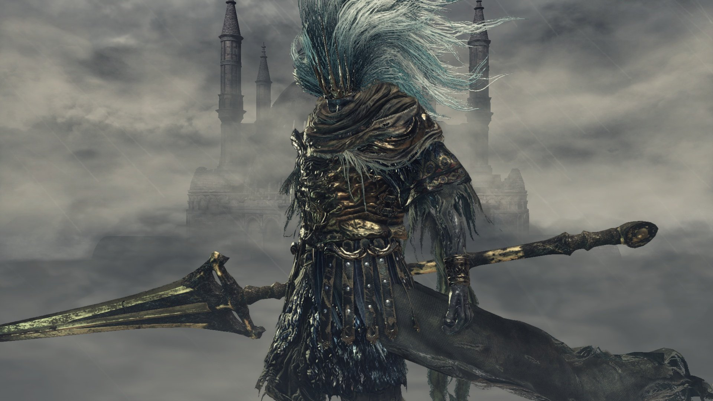
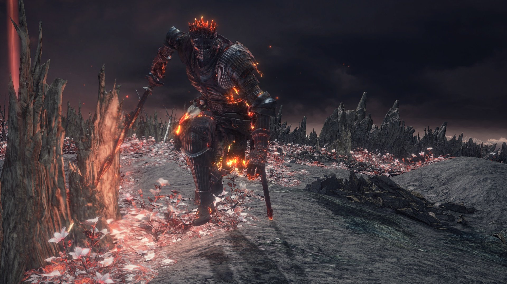
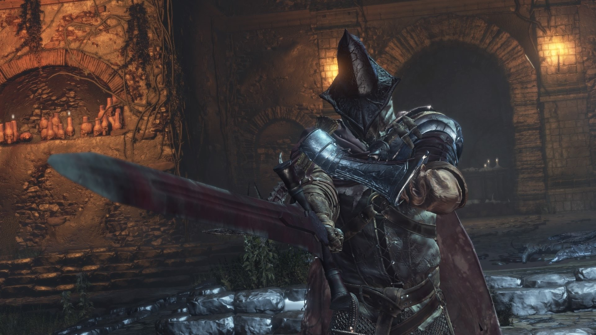

|
The Nameless King was a dragon-slaying god of war in the Age of the Gods and heir to lightning, until he sacrificed everything to ally with the ancient dragons. He tamed a Stormdrake and formed a close bond with it, leading it to countless battles. He is a former king. However, it is not known which kingdom he was the king of. |
Soul of Cinder is an amalgamation of previous Lords of Cinder such as Lord Gwyn and the Chosen Undead (assuming they survive and manages to link the flame in their world), and every other character who has ever linked the First Flame.The Soul of Cinder's role as the deific manifestation of the previous Lords of Cinder is to defend the flame. |
The Abyss Watchers were the main component of the Undead Legion of Farron, a special fighting force formed to combat the threat of the Abyss. Taking inspiration from the Wolf Knight (Sir Artorias, the Abyss Walker), the Abyss Watchers themselves sought to utilize the techniques of Artorias, and partook of wolf blood to do so. |
|  |  |  |